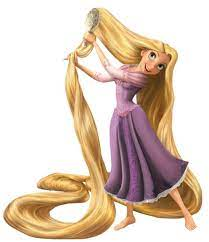

Rapunzel | Disney Wiki | Fandom Rapunzel é a personagem principal do filme de animação da Disney de 2010 Enrolados e a sua pequena sequência. Ela é uma princesa muito bonita com um cabelo loiro longo e mágico, que com ajuda de um ladrão formoso, Flynn Rider, deixa sua torre isolada para explorar o mundo exterior.
